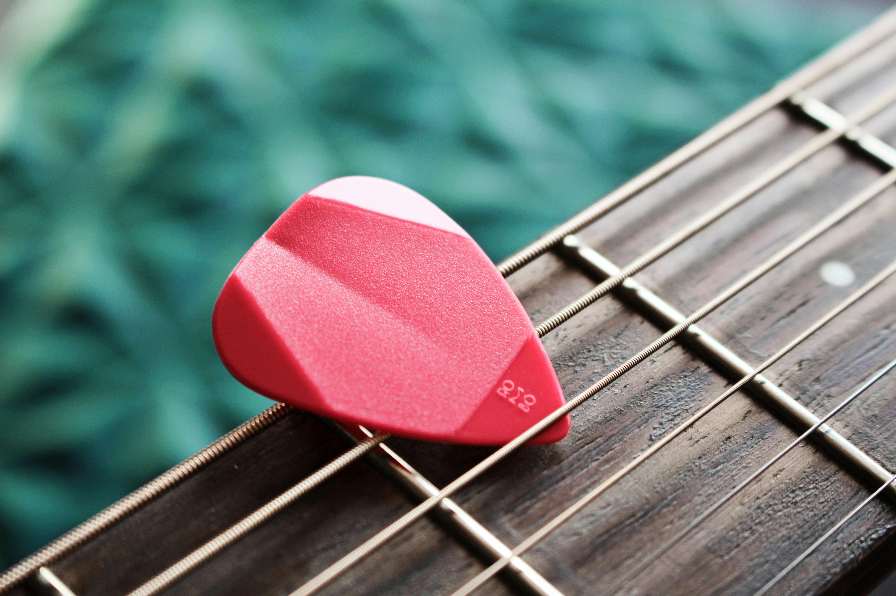
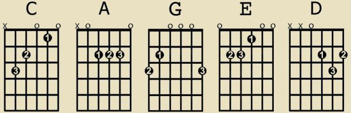
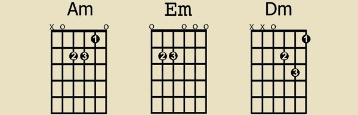

吉他和弦
吉他和弦：基本介紹
要學習和弦，我們可以先從新手八大和弦開始：
C , A , G , E , D , Am , Em , Dm
你千萬不要小看這八個和弦喔，這八個和弦學會後，可是有以下兩點好處的：
1. 學會成千上萬首歌 光是這八個和弦，就足以彈奏成千上萬首歌曲，像是 G – D – Em – C 這樣的 I – V – VIm – IV 級和弦進行就十分常見。使用的歌曲像 James Blunt – You’re Beautiful / U2 – With or without you / Maroon 5 – She will be loved 等等都是，雖然它們不是都在 Ｇ 大調，但我相信這問題可以藉由移調夾（Capo）來輕鬆解決的。
2. 大多和弦的基礎
當我們學習一些較複雜的進階的和弦時，可以由現在所學習的和弦慢慢推論出來，藉由理解的方式循序漸進，以後再也不用死背硬背滿坑滿谷的和弦圖了。
吉他八大和弦
數字代表使用手指。 1 = 食指 2 = 中指 3 = 無名指 4 = 小拇指
 